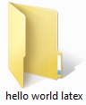
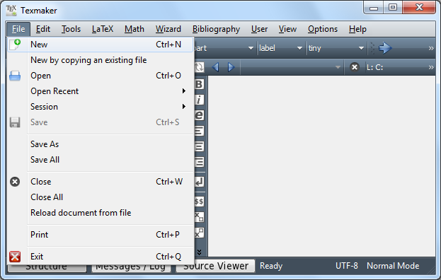
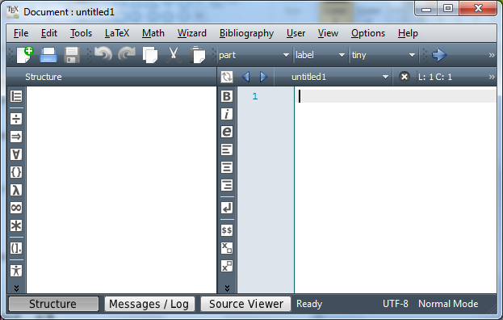
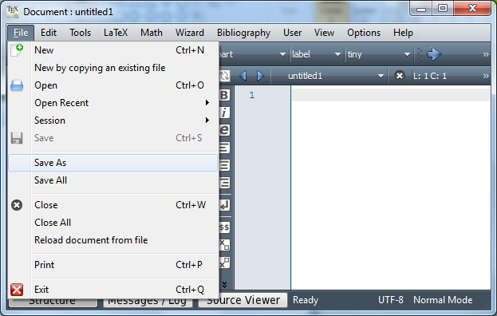
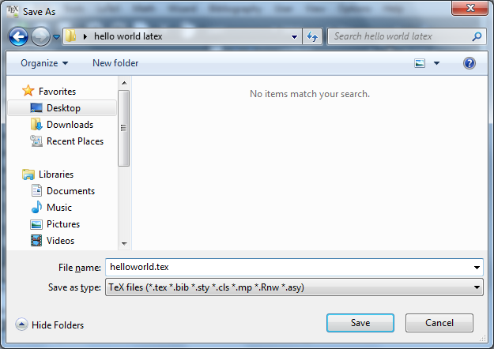
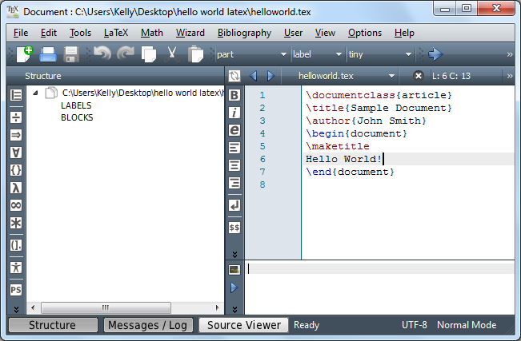

Once you have installed TeX Live and Texmaker, you just need to type (or copy and paste) your LaTeX source code into Texmaker and press F1. The following is a minimal list of steps to compile LaTeX source code into a PDF document.
1) Run Texmaker
A link to Texmaker should be in your start menu and a shortcut should be on your desktop:
 |
 |
Run Texmaker. You should see the following:

2) Create a New LaTeX Document
Before creating a new document, you'll first want to create a new folder to store it in. Create a new folder called "hello world latex" on your desktop:

Note: it is important to create a separate folder like this. When you compile your LaTeX source code, a PDF document, along with several other files, will be produced in the same folder as the LaTeX document.
Now, go back into Texmaker. To create a new document, choose File → New:

Notice how the title of the window changed to "Document : untitled1". You can now edit this document (the right half of the window), but we'll save it first.

Let's save this empty document. Go to the menu and choose File → Save As:

Navigate into the "hello world latex" folder on your desktop. Then, enter "helloworld.tex" as your File name and click Save:

Your document is now saved and you are ready to start compiling!
3) Write a Minimal Sample Document
The following code represents a very minimal LaTeX article:
\documentclass{article}
\title{Sample Document}
\author{John Smith}
\date{May 23, 2012}
\begin{document}
\maketitle
Hello World!
\end{document}
Copy and paste this code into the editor (on the right-hand side of the window):

4) Compile into a PDF
To see the resulting document, press F1. If your document is free from syntax errors, this will compile your document into a PDF file and preview it in the configured document viewer. The sample document PDF should look like this: